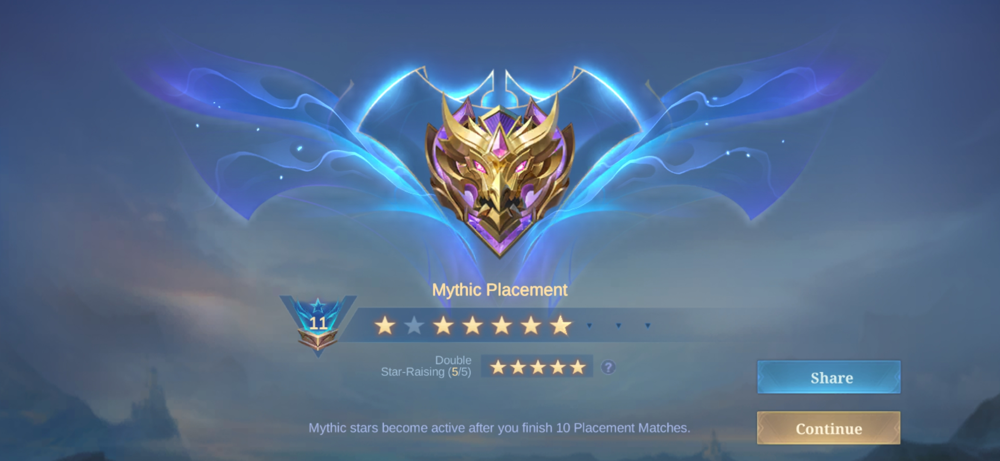
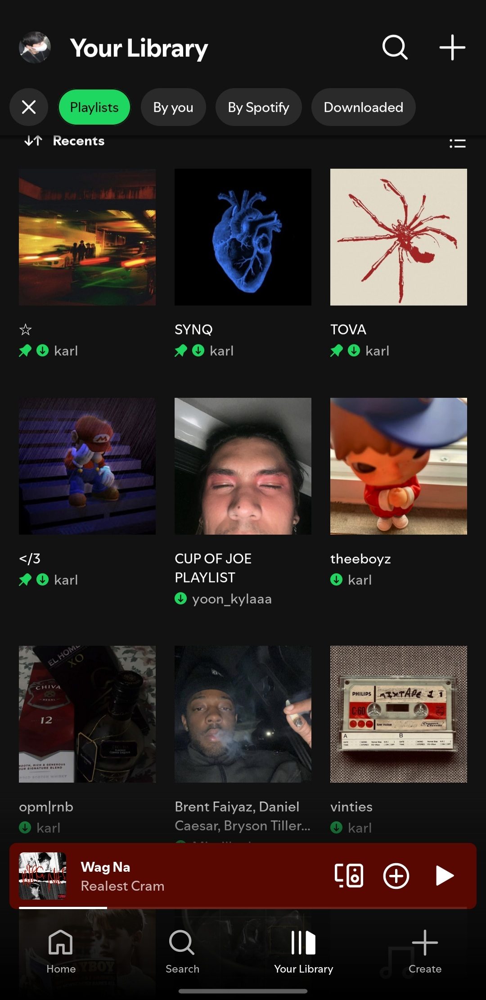
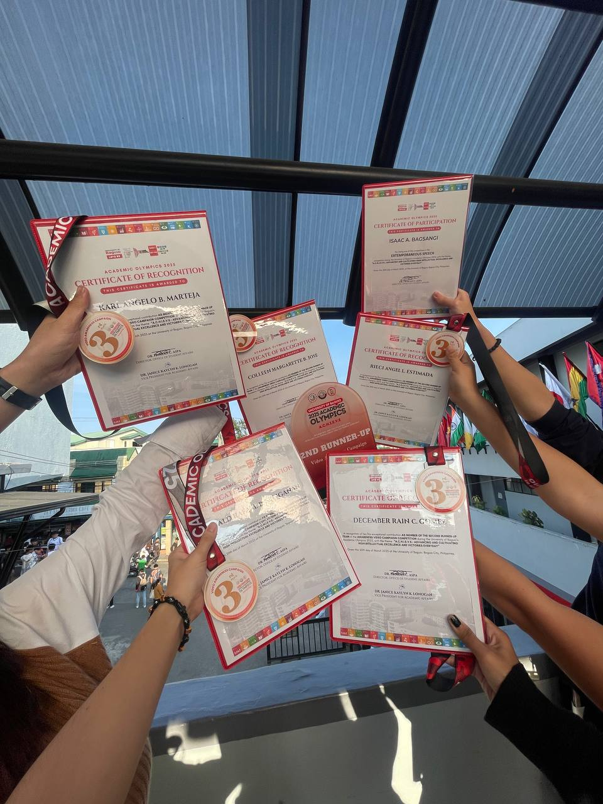

Karl Angelo B. Marteja
Bachelor of Science in Computer Science
My Journey
2024 - College | University of Baguio
Bachelor of Science in Computer Science
2nd Placer for Video Awareness Campaign
2021 - SHS | Jesus is Lord Colleges Foundation
Science Technology Engineering and Mathematics
Consistent Honor Student
Class Officer
Team Leader
Editing Head
2018 - JHS | San Lorenzo Ruiz School
Consistent Top Student
Loyaltee Awardee
Editing Head
Supreme Student Government Officer
*Gr. 7 Representative
*Gr. 8 Representative
*Gr. 9 Secretary
*Gr. 10 Vice Mayor
2012 - Elementary | San Lorenzo Ruiz School
Consistent Top Student
My Soft Skills
My Hard Skills
Fun Facts
0
Projects Completed
0
Hours Coded
0
Prayers
Get to Know Me
My Unique Value
As a BSCS student, I take pride in producing clean, precise, and thoughtfully structured outputs. I'm naturally observant and a perfectionist, always striving for quality in every detail.
Aiming For
I'm aiming for a stable career that offers growth and continuous opportunities to upgrade my income as I develop my skills.
Working Style
I tend to work best independently, as I’m more focused and comfortable when working solo. While I'm not very talkative, I'm open to growing in collaborative environments over time.
Values and Beliefs
I live by the motto: “Always be the student, never the master.” I believe there's always room to grow, and I'm committed to constantly improving myself and my craft.
My Interests
Gaming
I enjoy playing strategy and adventure games to relax and get inspired creatively.
Music
Listening to music boosts my focus and mood, especially when coding or designing.
Photo & Video Editing

I love exploring visual storytelling through editing — it complements my tech side!
Learning New Skills
I constantly explore new tools and frameworks to level up my tech knowledge.
What They Say About Me
"Karl’s designs are always so neat and organized—clean layouts that are easy on the eyes and never overwhelming."
– Colleen Jose"Whenever he works on web design, we instantly notice his minimalist approach. His layouts are always clean, organized, and give off a really professional vibe. It’s like he knows exactly what to remove to make everything look polished and purposeful."
– Rain Gomez"Karl’s designs are always so creative. He keeps things simple but still makes them stand out in a unique way."
– Jerlyn Cortez"You’ll always spot Karl’s work—it usually has a touch of green and his signature 'BEAM' style. It’s like his creative fingerprint."
– Rafael Saliganan"His style is distinctly minimalist with a consistent touch of green—simple, clean, and unmistakably his."
– Rieci Estimada